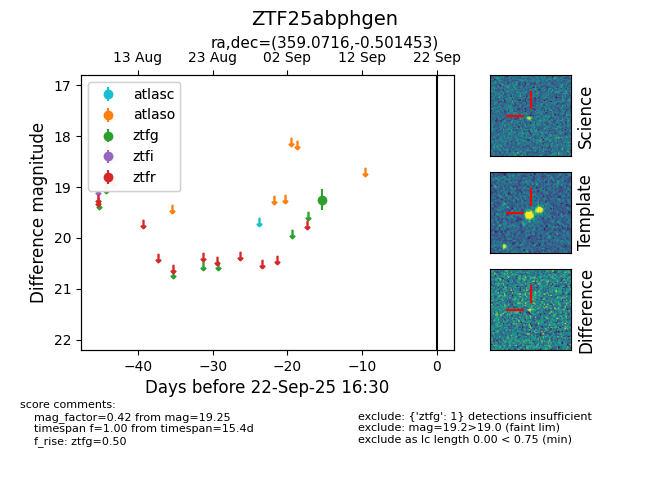

FINK: ZTF25abphgen
Lasair: ZTF25abphgen
ALeRCE: ZTF25abphgen
ZTF25abphgen (ztf,fink)
equatorial (ra, dec) = (359.0716,-0.50145)
galactic (l, b) = (94.2176,-60.26175)

last ztfg=19.25
1 ztfg detections